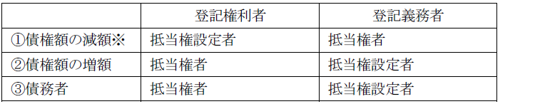
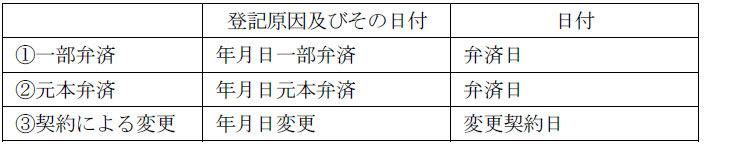
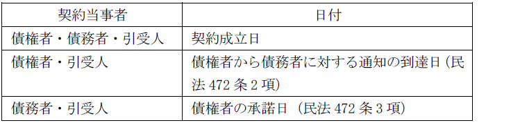
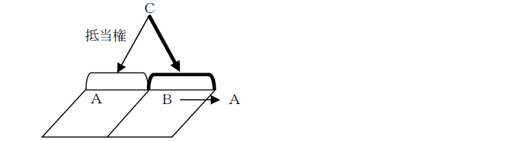
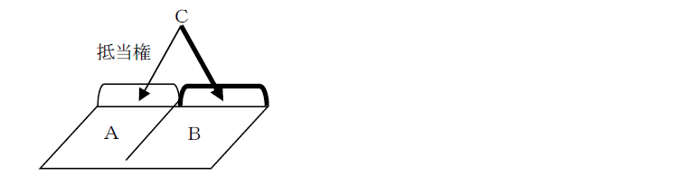

第１編 各 論
第２章 抵当権の登記
第３節 抵当権の変更・更正
抵当権者の一部について誤った登記がなされた場合には、所有権の更正登記と同様に考えることができる。
例えば、甲乙両名が債権者であったのに、甲を抵当権者とする抵当権の設定登記がなされてしまった場合には、乙を登記権利者、甲及び設定者を登記義務者として、更正登記を申請することとなる(登研466P.113)。
1. 債権額・債務者の更正
(1) 申請情報の内容
(a) 登記の目的
「○番抵当権更正」と記載する。
(b) 登記原因及びその日付
「錯誤」又は「遺漏」とし、日付の表示は不要である。
(c) 申請人

※ 抵当権の利息を、「年2.7％、ただし令和○年7月1日から年3.0％」から「年2.7％、ただし令和○年8月1日から年3.0％」に更正する場合、抵当権者が登記上不利益を受けるので登記義務者となる（登研457P.119）。
(d) 登記事項
更正後の事項として正しい債権額を表示する。
(e) 添付情報
①登記識別情報（22条本文）
登記義務者の登記識別情報
②印鑑証明書（不登令16条2項、18条2項）
設定者が登記義務者となる場合であって、不動産（所有権）に抵当権が設定されているときは、登記義務者の印鑑証明書を提供しなければならない。
③承諾証明情報（不登令別表25添付情報ロ）
登記上の利害関係を有する第三者があるときであって、当該変更登記を付記登記によってする場合には、当該第三者の承諾を証する当該第三者が作成した情報又は当該第三者に対抗することができる裁判があったことを証する情報を提供しなければならない。
(f) 登録免許税
①減額
不動産1個につき金1000円である（登免法別表1.1.(14)）。
②増額
増額する部分については、新たな設定登記とみなされるので（登免法12条1項）、増加した債権額の1000分の4が登録免許税の額となる（登免法別表1.1.(5)）。
(2) 登記申請の可否
① 登記された抵当権について、その被担保債権の発生原因の日付を更正する登記の申請情報には、登記上の利害関係を有する第三者の承諾を証する情報又はこれに代わるべき裁判があったことを証する情報の提供を要しない（昭31.3.14民甲504）。
抵当権と他の権利との優先関係は受付年月日・受付番号の先後、つまり、申請日の先後で決まるので、被担保債権がいつ発生したかということは優先関係とは何の関係もないからである。
② Ａを債務者とすべきところＢを債務者として抵当権の設定の登記を受けた場合、登記原因を錯誤とし、債務者をＡとする抵当権の更正の登記の申請をすることができるか？
→ できる（昭37.7.26民甲2074）。
抵当権の被担保債権が特定されている以上、債務者に錯誤があっても、更正の前後を通じて同一性があるといえるからである。
1. 抵当権の債権額の減額変更
(1) 総説
抵当権の被担保債権が一部弁済によって減額されたときや、抵当権の被担保債権の元本のみが全額弁済され、利息が残存している場合には、債権額を利息のみとする抵当権の変更の登記を申請することができる。
【申請例56 抵当権変更 一部弁済】
事例： 令和○年6月28日、Ａは、自己所有土地上の乙区1番の抵当権の抵当権者Ｂに対して、当該抵当権の被担保債権金2000万円の一部金1000万円を弁済した。なお、利害関係人はいない。
(2) 申請情報の内容
(a) 登記の目的
「○番抵当権変更」と記載する。
(b) 登記原因及びその日付

(c) 申請人
登記権利者：抵当権設定者
登記義務者；抵当権者
(d) 登記事項
変更後の事項として現在の債権額を表示する。
元本弁済の場合には、「変更後の事項 債権額 金50万円（令和2年4月1日から令和○年3月31日までの利息）」のように表示する。
(e) 添付情報
①登記識別情報（22条本文）
登記義務者の登記識別情報
②印鑑証明書（不登令16条2項、18条2項）
設定者が登記義務者となる場合であって、不動産（所有権）に抵当権が設定されているときは、登記義務者の印鑑証明書を提供しなければならない。
③承諾証明情報（不登令別表25添付情報ロ）
登記上の利害関係を有する第三者があるときであって、当該変更登記を付記登記によってする場合には、当該第三者の承諾を証する当該第三者が作成した情報又は当該第三者に対抗することができる裁判があったことを証する情報を提供しなければならない。
【減額の場合の登記上の利害関係人】
（ⅰ）転抵当権者等の抵当権の処分を受けた者
（ⅱ）被担保債権の質権者
（ⅲ）当該抵当権の移転（請求権）仮登記名義人
（ⅳ）当該抵当権を目的とする（仮）差押登記名義人
(f) 登録免許税
不動産1個につき金1000円である（登免法別表1.1.(14)）。
2. 抵当権の債権額の増額変更
(1) 総説
抵当権の債権額を増加する変更登記は、原則としてできない（明32.11.1民刑1904）。抵当権の債権額を増加する場合の登記は、あらたな抵当権設定登記によるべきである。
もっとも、以下の場合には、債権額の増額変更が認められる。
①金銭消費貸借予約契約に基づく将来の貸付金を担保するための抵当権の設定の登記がなされている場合において、当該予約契約を変更して貸付金額の増額をしたとき（昭42.11.7民甲3142）
②抵当権の変更契約によって、一定の日までに発生する利息債権を債権額に追加したとき（昭41.12.1民甲3323）
③利息を元本に組み入れるとき（民法405条） ※
④債権の一部を担保していたが、債権の全額を担保する変更をしたとき
⑤債権額を外国の通貨をもって表示する場合に、日本の通貨をもって表示する担保限度額を変更するとき
※利息の元本組入れの要件
利息の支払が①1年分以上延滞した場合において、②債権者が催告をしても、③債務者がその利息を支払わないときは、債権者は、これを元本に組み入れることができる（民法405条）。
(2) 申請情報の内容
(a) 登記の目的
「○番抵当権変更」と記載する。
(b) 登記原因及びその日付
利息の元本組入れ：「令和○年6月28日 令和2年5月1日から令和○年4月30日までの利息の元本組入」のように記載し、日付は、その旨の意思表示が債務者に到達した日を記載する。
契約による変更：「年月日変更」と記載し、日付は変更契約日を記載する。
(c) 申請人
登記権利者：抵当権者
登記義務者：抵当権設定者
(d) 登記事項
「変更後の事項」として変更後の債権額を表示する。
(e) 添付情報
①登記原因証明情報（61条）
②登記識別情報（22条本文）
③印鑑証明書（不登令16条2項、18条2項）
④承諾証明情報（不登令別表25添付情報ロ）
【増額の場合の登記上の利害関係人】
（ⅰ）同順位・後順位の担保権者
（ⅱ）後順位の所有権仮登記権利者
（ⅲ）後順位の抵当目的物に対する差押債権者・仮差押債権者
（ⅳ）当該抵当権に順位を譲渡した先順位の担保権者
(f) 登録免許税
増額する部分については、新たな設定登記とみなされるので（登免法12条1項）、増加した債権額の1000分の4が登録免許税の額となる（登免法別表1.1.(5)）。
3. 抵当権の一部移転の登記後に抵当権の（準）共有者の1人の債権が弁済された場合
(1) 総説
例えば、Ａ名義の抵当権設定登記がされている場合に、その被担保債権の一部譲渡等により、ＡからＢへの抵当権の一部移転登記がされていることがある。この場合において、Ｂの債権のみが弁済等により消滅したときは、以下の2つの登記の申請が考えられる。
①Ｂへの抵当権一部移転の登記の抹消登記
②債権額を、残存するＡの債権額とする変更登記
この場合、②の変更登記を申請する。①の抹消登記を申請しただけでは、当該抵当権は、登記記録上、Ｂへの債権譲渡前のＡの債権全額を担保するものとなってしまうからである。
【申請例57 抵当権の一部移転の登記後に抵当権の（準）共有者の1人の債権が弁済された場合の登記】
(2) 申請情報の内容
(a) 登記の目的
「○番抵当権変更」と記載する。
(b) 登記原因及びその日付
上記の事例であれば、「年月日Ｂの債権弁済」と記載し、日付は弁済日を記載する。
(c) 登記事項
「変更後の事項」として残存の債権額を表示する。
(d) 申請人
登記権利者：抵当権設定者
登記義務者：弁済を受けた抵当権の（準）共有者（書式精義P.1063、総覧P.3206、日本加除出版「抵当権実務必携Q＆A」Q11）
※抵当権の（準）共有者全員が登記義務者となる見解もあるが、少数派であると考えられる。
(e) 添付情報
①登記識別情報（22条本文）
抵当権設定又は取得の際の登記識別情報
②承諾証明情報（不登令別表25添付情報ロ）
登記上の利害関係人は、転抵当権者等の抵当権の処分を受けた者、被担保債権の質権者等がこれに当たる。
1. 債務引受けによる抵当権の債務者の変更登記
債務引受けには、①免責的債務引受け②併存的債務引受け③履行の引受けがある。このうち、登記申請が必要となるのは、①及び②である。
(1) 免責的債務引受
(a) 意義
債権者は、あらかじめ又は同時に引受人に意思表示することによって、引受人が設定した抵当権を、引受人が負担する債務に移すことができる（民法472条の4第1項）。
これに対して、引受人以外の者が設定した抵当権は、その者（物上保証人）の承諾がなければ引受人が負担する債務に移すことができず、承諾がない場合、抵当権は消滅する（民法472条の4第1項）。物上保証人は、旧債務者の債務を担保することに同意しているのみであるので、債務者が変更すれば大きな影響を受けるからである。
【申請例58 抵当権変更 免責的債務引受】
事例： 令和○年6月28日、設定者Ｃ、債務者Ａ、及び抵当権者Ｂは、Ｃ所有土地上の乙区1番のＢの抵当権の被担保債権の債務者を、ＡからＣ（住所：東京都豊島区乙町五丁目5番5号）に変更する旨の免責的債務引受契約を締結した。Ｂは、当該契約と同時に、抵当権を引受人Ｃが負担する債務に移す旨の意思表示をした。
(b) 申請すべき登記の内容
ⅰ 引受人が設定者であり、債権者が引受人に抵当権を移す旨の意思表示をした場合
抵当権は消滅しないので、債務者の変更登記を申請する。
ⅱ 引受人以外の第三者が設定者である場合
設定者の承諾がなければ、抵当権は消滅するので、抵当権の抹消登記を申請する。これに対して、設定者の承諾があれば、抵当権は消滅しないので、債務者の変更登記を申請する。
※設定者の承諾がない場合の抵当権消滅の登記の目的と登記原因及びその日付は、次のとおりとなる。
※日付は免責的債務引受契約の成立日
(c) 申請情報の内容
①登記の目的
「○番抵当権変更」と記載する。
②登記原因及びその日付
「年月日免責的債務引受」とし、日付は契約の成立日である。

③登記事項
「変更後の事項 債務者」として、引受人の氏名（名称）・住所を表示する。
※債務者の変更の登記を申請する場合において、所有権登記名義人が登記義務者となるときであっても、申請書にその者の印鑑証明書を添付する必要はない（不登規47条3号イ（1）括弧書、昭30.5.30民甲1123参照、登研364P.81）。
※債務者の変更登記に登記上の利害関係人は常に存在しない。
④登記原因証明情報
債権者と引受人の契約による場合には、①契約の成立、②債権者による債務者への通知があったこと、③担保権の移転について債権者の意思表示があったことを証するものでなければならない（民法472条2項、同472条の4第2項）。
債務者と引受人の契約による場合には、①契約の成立、②債権者の承諾があったこと、③担保権の移転について債権者の意思表示があったことを証するものでなければならない（民法472条3項、同472条の4第2項）。
また、いずれの場合であっても、設定者が引受人以外の場合には、その者の承諾があったことを証するものでなければならない（民法472条の4第1項）。
(2) 併存的債務引受
(a) 意義
併存的債務引受けの効果は、引受人が債務者と同一内容の債務を併存的に負担することにある。債務者の債務と引受人の債務は、連帯債務となる（民法470条1項、最判昭41.12.20）。
【申請例59 抵当権変更 併存的債務引受】
事例： 令和○年6月28日、設定者Ｃ、債務者Ａ、及び抵当権者Ｂは、Ｃ所有土地上の乙区1番のＢの抵当権の被担保債務をＣ（住所：東京都豊島区乙町五丁目5番5号）が併存的に引き受ける旨の契約を締結した。
(b) 申請情報の内容
①登記の目的
「○番抵当権変更」と記載する。
②登記原因及びその日付
「年月日併存的債務引受」とし、日付は契約成立日である。
なお、登記原因を「重畳的債務引受」として申請がなされた場合には、「重畳的債務引受」を登記原因として登記しても差し支えない（令2.3.31民二.328）。
| 契約当事者 | 日付 |
| 債権者・債務者・引受人 | 契約成立日 |
| 債権者・引受人 | 契約成立日（民法470条2項） |
| 債務者・引受人 | 債権者の承諾日（民法470条3項） |
③登記事項
「追加する事項 連帯債務者」として、引受人の氏名（名称）・住所を表示する。
(2) 登記申請の可否
・外国会社が債務を引き受けたことによる変更の登記の申請情報には、債務者の表示として日本における営業所を併せてその内容とすることができるか？
→ できる（昭41.5.13民3.191参照）。
2. 連帯債務者の1人に対する債務免除による抵当権の変更の登記
(1) 意義
連帯債務者の1人に対する債務が全額免除されれば、その者は連帯債務関係から外れることになるので、抵当権の債務者の変更登記を申請することになる（登研402P.93）。
【申請例60 抵当権変更 連帯債務者の1人に対する債務免除】
事例： 令和○年6月28日、Ａ所有土地上の乙区1番の抵当権の抵当権者Ｃは、当該抵当権の被担保債権の連帯債務者ＡＢのうち、Ｂに対して、債務全額を免除する意思表示をした。
(2) 申請情報の内容
①登記原因及びその日付
登記原因は、「年月日債務免除」と記載し、日付は債務免除がされた日を記載する。
②登記事項
【債務免除により債務者が1人となった場合】
「変更後の事項 債務者」として、他の債務者を表示する。
【債務免除によっても債務者が複数存在する場合】
「変更後の事項 連帯債務者」として、他の債務者を表示する。
③申請人
たとえ連帯債務者2人を1人とする場合であっても、抵当権者を登記権利者、設定者を登記義務者とする共同申請である（60条）。
3. 債務者の相続・遺産分割による抵当権の変更の登記
(1) 債務者の相続
抵当権の被担保債権の債務者が死亡して相続が開始した場合、相続人は、その相続分に応じて債務を承継する（民法899条参照）。そのため、相続を原因とする抵当権の債務者の変更の登記を申請することになる。
もっとも、特定の相続人のみが債務を引き受けることは可能であり、そのためには次の方法が考えられる。
①遺産分割により特定の相続人のみが債務を引き受けることとする方法（債権者の承認が必要）
②遺産分割以外の方法、すなわち、いったん共同相続人全員が債務を承継した後、特定の相続人が債務を引き受ける方法（これは、債権者と相続人との間の契約によってされる）
(2) 登記申請の方法
①相続人が1人の場合又は各共同相続人が相続分に応じて債務を負担する場合
→「相続」を登記原因として、相続人（全員）を債務者とする抵当権の変更登記を申請する。
②債務者の相続による抵当権変更登記を申請する前に遺産分割により特定の相続人のみが債務を引き受けた場合（債権者の承諾がある）
→「相続」を登記原因として、直接、その被相続人の債務を引き受けた相続人を債務者とする抵当権の変更登記を申請することができる（昭33.5.10民甲964）。
③いったん共同相続人全員が債務を承継した後、特定の相続人が債務を引き受ける場合
→まず、「相続」を登記原因とする共同相続人全員を債務者とする抵当権の変更登記を申請し、次いで、「○○の債務引受」を原因とする抵当権の変更登記を申請しなければならない（昭33.5.10民甲964）。
【申請例61 抵当権変更 債務者（相続）】
事例： 令和○年6月28日、Ａ所有土地上の乙区1番抵当権（抵当権者Ｂ）の債務者Ｃが死亡し、その相続人は、妻Ｄ、子Ｅのみであった。
【申請例62 抵当権変更 債務者（遺産分割）】
事例： Ａ所有土地上の乙区1番抵当権（抵当権者Ｂ）の債務者Ｃが令和○年6月28日に死亡した。Ｃの相続人は、妻Ｄ、子Ｅのみであった。同日、ＤＥの間で、当該抵当権の被担保債務をＤが引き受ける旨の遺産分割協議が、Ｂの承諾のもとに成立した。
(3) 申請情報の内容
以下、相続による債務者の抵当権変更登記に特有の事項について説明する。
①登記原因及びその日付
ⅰ 上記(2)の①、②及び③の相続の登記
「年月日相続」とし、日付は、相続開始の日（被相続人の死亡日）とする。
ⅱ 上記(2)の③の債務引受けの登記
「年月日Ｅの債務引受」と記載し、日付は債務引受契約の成立日を記載する。
②登記事項
「変更後の事項 債務者○○」と記載して、相続人（全員）又は債務を引き受けた相続人を表示する。
4. 債務者の更改による抵当権変更の登記
(1) 債務者の更改
債務者の交替による更改は、債権者と更改後に債務者となる者との契約によってすることができ、債権者から更改前の債務者にその契約をした旨を通知した時に効力を生ずる（民法514条1項）。
債務者の更改をした場合、債権者が更改の相手方に対してあらかじめ又は同時に意思表示することによって、更改後の債務に抵当権を移すことができる。もっとも、物上保証の場合には、物上保証人の承諾が必要である（民法518条）。
【申請例63 抵当権変更 債務者更改による新債務担保】
事例： 令和○年6月28日、設定者兼債務者Ａ、Ｂ及び抵当権者Ｃとの間で、Ａ所有土地上の、ＣのＡに対する乙区1番抵当権の被担保債権を消滅させるとともに、債権者Ｃ、債務者Ｂ（住所：東京都新宿区乙町一丁目1番1号）とする金銭消費貸借契約による債権（債権額金1200万円、弁済期日令和○年5月27日、利息年5％）を新たに成立させる契約が成立し、同時に、ＣはＡに対し、乙区1番抵当権をこの新債務の担保とする旨の意思表示をした。
(2) 申請情報の内容
(a) 登記原因及びその日付
登記原因は「年月日債務者更改による新債務担保」と記載し、日付は更改契約の成立日（別段の意思表示のない限り、債権者から更改前の債務者への通知の到達日。民法514条1項）を記載する。
(b) 登記事項
新たな債務者と債権者との間の被担保債権に関する事項（債権額、利息、損害金等）を表示する。
例えば、ＡＢ共有の不動産につき、Ａの持分についてＣを抵当権者とする抵当権設定登記がされた後、ＡがＢの共有持分を取得して、Ａの単有不動産となった場合、Ａの取得した新たな持分について、Ｃの抵当権の効力を及ぼす方法が問題となる。
この場合、既に単有に帰した所有権は、持分なる観念は存在しなくなり、所有権の一部に抵当権を設定することは認められていないので、設定登記ではなく、変更登記によることになる。これが、抵当権の効力を所有権全部に及ぼす変更の登記である。

※ＡＢが共有している土地について、Ａ持分に抵当権が設定された。その後、その抵当権と同一の債権を担保するために、Ｂ持分に抵当権を設定する契約が締結された。いかなる登記を申請すべきか？
→「Ｂ持分抵当権設定登記」を申請すべきである（登研304P.73参照）

【申請例64 抵当権変更 抵当権の効力を所有権全部に及ぼす変更】
事例： ＡＢ共有土地について、Ａ持分につき、Ｃを抵当権者、Ａを債務者とする、令和5年7月10日に締結された金銭消費貸借に基づく債権を被担保債権として、1番抵当権が設定された後、令和○年6月28日、ＡとＣは、甲土地についてＡがＢから取得した持分を目的として、甲土地の乙区1番の抵当権の被担保債権を担保するため、抵当権の追加設定契約を締結した。
1. 申請情報の内容
(1) 登記の目的
「○番抵当権の効力を所有権全部に及ぼす変更」と記載する。
(2) 登記原因及びその日付
事実上の追加設定であるので、登記原因は「年月日金銭消費貸借年月日設定」等と記載し、前者の日付は、債権成立の日、後者の日付は、設定日を記載する。
(3) 登記事項
既に設定されている抵当権の表示を見ればわかるので、表示することを要しない。
(4) 添付情報
①登記識別情報（22条本文）
登記義務者である設定者の登記識別情報を提供する。追加設定する持分を取得した際の登記識別情報を提供する（登研411P.84）。
②承諾証明情報（不登令別表25添付情報ロ）
及ぼす変更登記は、登記の形式としては変更登記であるので、登記上の利害関係人がある場合、当該第三者の承諾を証する当該第三者が作成した情報又は当該第三者に対抗することができる裁判があったことを証する情報を提供した場合に限り、付記登記によってなされる。
登記上の利害関係人としては、及ぼす変更登記により抵当権が及ぶことになる部分についての後順位担保権者や当該抵当権に劣後する所有権の仮登記権利者等がこれにあたる。
(5) 登録免許税
抵当権の追加設定の登記として、不動産1件につき金1500円である（登免法13条2項）。
抵当権者が、抵当権の設定されている共有地の一部の共有者の持分につき抵当権を放棄した場合、残りの共有者の持分を対象とする抵当権となることから、その変更の登記が必要となる（登研108P.42）。
一部抹消登記は存在せず、更正登記の要件にも該当しないため、このような変更登記となる。
※ＡＢ共有の不動産を目的としてＣの抵当権が設定されている場合において、Ｃの抵当権がＡに移転したときは、Ａ持分に係る抵当権はどうなるか？
→混同により消滅し、Ｂ持分に係る抵当権となる（登研118P.45）。
【申請例65 抵当権変更 抵当権を共有者持分の抵当権とする変更】
事例： 令和○年6月28日、ＡＢが共有する甲土地上に1番抵当権を有するＣは、Ｂに対して、Ｂの持分について、当該1番抵当権を放棄する意思表示をした。
1. 申請情報の内容
(1) 登記の目的
「○番抵当権をＡ持分の抵当権とする変更」と記載する。
(2) 登記原因及びその日付
登記原因は「年月日Ｂ持分の放棄」等と記載し、日付は放棄日を記載する。
(3) 申請人
登記権利者：抵当権の消滅を受ける共有者
登記義務者：抵当権の登記名義人（登研108P.42）
(4) 添付情報
①登記原因証明情報（61条）
抵当権放棄証書等が、登記原因証明情報となる。
②登記識別情報（22条本文）
登記義務者である抵当権者の登記識別情報を提供する。
③承諾証明情報（不登令別表26添付情報ヘ）
この登記は、一部抹消の実質を有するので、登記上の利害関係を有する第三者があるときは、当該第三者の承諾を証する当該第三者が作成した情報又は当該第三者に対抗することができる裁判があったことを証する情報を提供する。
登記上の利害関係人としては、放棄に係る抵当権を目的とする転抵当権者等、抵当権の処分を受けている者、当該抵当権移転の仮登記権利者又は当該抵当権に対する差押債権者等がこれに当たる。
(5) 登録免許税
変更登記として、不動産1個につき金1000円である（登免法別表1.1.(14)）。